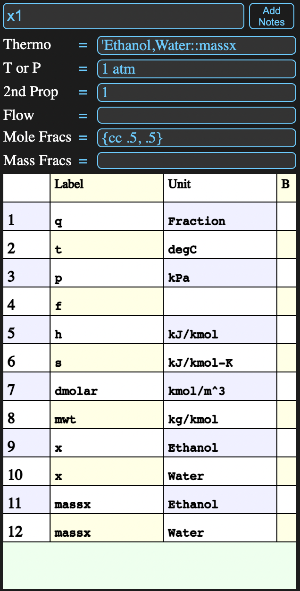

This tool uses a bespoke JavaScript implementation of the Peng Robinson (1978) equation of state coupled with data from ChemSep and DWSIM. It can do t-p, t-s, t-h, p-s, p-h, p-q and t-q two phase flashes as well as immiscible water three phase t-p flashes. There are over 500 compounds in the component library.
Below is an image of the information view for a dew point flash of a mixture of ethanol and water. There are six input fields, which are explained in the sections below, and a table showing the calculated properties of the bulk fluid and the vapour and liquid phases if it is two phase. The table can be dragged around like other tables.

You can click on any row of the table to view the unit and format used for the row. In the image above, the flow row has been clicked on, so the flow unit and format are shown.
As in other MM tables, you can click on the unit description to bring up a unit picker and you can enter a format for the row in the format field.
The thermo field formula should resolve to a string which is a comma separated list of the fluids (i.e. compounds) that are included in the flash.
A list of the available fluids can be obtained from the fluids parameter of any flash, even if it has no inputs. For example if you create a flash named feed, then an expression with the formula:
feed.fluids
will have a column array of fluid names as its value.
The following properties are always calculated and reported in the info view table:
Additional properties (see the list in the formula parameters section) can be requested by appending ';' to the end of the thermo string, followed by a comma separated list of the properties. For example in the flash above the thermo is defined by the formula:
'Ethanol,Water;massx
The thermo definition ignores all white space, so you can use spaces, tabs and newlines if you wish.
An easy way to construct the thermo definition is to use the SelectThermo model from the Tools -> Flash -> ToolBox model in the Getting Started session.
Also the thermo definition for a flash is available as a parameter of the flash, so other flashes making use of its results can easily reuse the same definition.
Note: not all the combinations of components have interaction parameters and a value of zero will be assumed for any missing ones.
A flash requires two intensive properties in order to perform its calculation and Math Minion requires that one of those be temperature or pressure. Thus this formula must resolve to one of those, based on its conversion unit type.
Despite the label, in the special case of the thermo definition only having a single component, a molar density can also be used for this intensive property.
The second property can be one of the following:
except it of course can't be the same as the T or P Input property. As with the T or P formula, the type of property is determined by its conversion unit type.
A flow value isn't needed to perform a flash, but if it is provided, the flows for the vapour and liquid phases will be calculated if the result is two phase.
The flow formula can resolve to either a molar flow or a mass flow, based on the unit conversion type.
The composition can be specified in either mole or mass fractions. Because both have the unit conversion type of Fraction, they have seperate input formulas. The composition should resolve to an array of the same length as the number of components defined in the thermo definition.
The composition will be normalized, so the values don't need to sum to 1. The normalizing process also removes any units, so you could provide an array of flows if you wished.
Parameters that can be accessed in the form a.b where a is the tool and b is the parameter
Parameters that aren't dependent of the calculated phases are:
Other properties are accessed with phase and property parameters with the general form being:
someFlash.phase.property
where either the phase or the property can be omitted.
If only the phase appears, then the result is value containing all the properties for that phase. This is useful in tool reference expressions, such as input or output expressions in a model.
If only the property is present, then the property for the bulk phase is returned.
For example, assuming we have a flash tool named "feed":
The allowable phase values are:
The following properties are always calculated and available as property parameters:
The properties below are optional and are only calculated and available when they have been included in the thermo definition as described above: